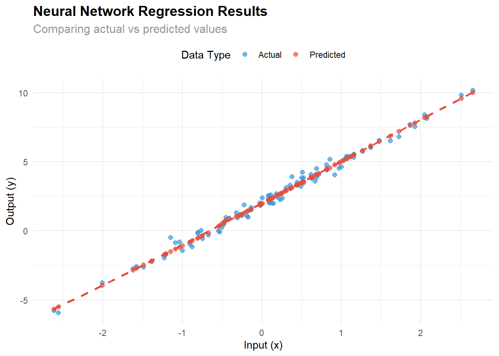
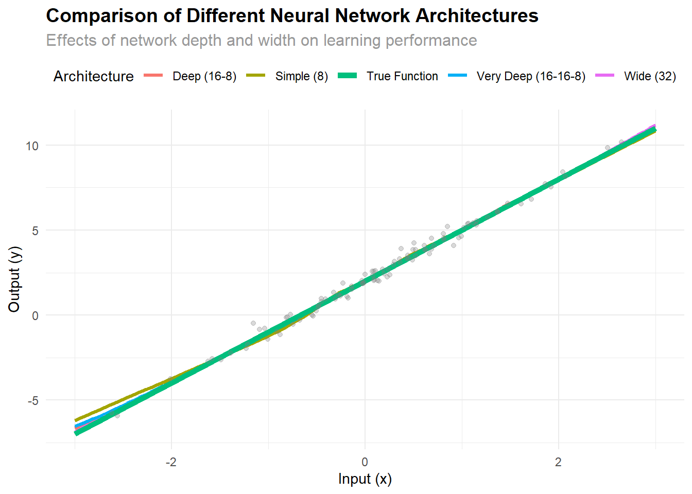

# install.packages("torch")
library(torch)
# torch::install_torch()Building a Simple Neural Network in R with torch
R
Deep Learning
torch
The torch package brings the power of deep learning to R by providing bindings to the popular PyTorch library. In this post, you’ll learn how to build and train a simple neural network using torch in R.
Installation
To get started, install the torch package from CRAN and set up the backend:
Creating a Simple Neural Network
Let’s create a neural network to perform regression on a simple dataset (predicting y from x).
1. Generate Sample Data
We’ll start by creating some synthetic data with a linear relationship plus some noise:
# Set seed for reproducibility
set.seed(42)
# Generate training data: y = 3x + 2 + noise
x <- torch_randn(100, 1)
y <- 3 * x + 2 + torch_randn(100, 1) * 0.3
# Display the first few data points
head(data.frame(
x = as.numeric(x$squeeze()),
y = as.numeric(y$squeeze())
)) x y
1 1.9790213 7.8955870
2 -1.1587162 -1.2231925
3 -0.4262840 0.9012265
4 0.6651266 3.9386432
5 0.2999833 3.2916081
6 0.1497405 2.18876892. Define the Neural Network Module
Now we’ll define our neural network architecture using torch’s module system:
# Define a simple feedforward neural network
net <- nn_module(
initialize = function() {
# Define layers
self$fc1 <- nn_linear(1, 8) # Input layer to hidden layer (1 -> 8 neurons)
self$fc2 <- nn_linear(8, 1) # Hidden layer to output layer (8 -> 1 neuron)
},
forward = function(x) {
# Define forward pass
x %>%
self$fc1() %>% # First linear transformation
nnf_relu() %>% # ReLU activation function
self$fc2() # Second linear transformation
}
)
# Instantiate the model
model <- net()
# Display model structure
print(model)An `nn_module` containing 25 parameters.
── Modules ─────────────────────────────────────────────────────────────────────
• fc1: <nn_linear> #16 parameters
• fc2: <nn_linear> #9 parameters3. Set Up the Optimizer and Loss Function
We need to define how our model will learn from the data:
# Set up optimizer (Adam optimizer with learning rate 0.01)
optimizer <- optim_adam(model$parameters, lr = 0.01)
# Define loss function (Mean Squared Error for regression)
loss_fn <- nnf_mse_loss
cat("Optimizer:", class(optimizer)[1], "\n")Optimizer: optim_adam cat("Loss function:", "Mean Squared Error\n")Loss function: Mean Squared Errorcat("Learning rate:", 0.01, "\n")Learning rate: 0.01 4. Training Loop
Now we’ll train our neural network:
# Store loss values for plotting
loss_history <- numeric(300)
# Training loop
for(epoch in 1:300) {
# Set model to training mode
model$train()
# Reset gradients
optimizer$zero_grad()
# Forward pass
y_pred <- model(x)
# Calculate loss
loss <- loss_fn(y_pred, y)
# Backward pass
loss$backward()
# Update parameters
optimizer$step()
# Store loss for plotting
loss_history[epoch] <- loss$item()
# Print progress every 50 epochs
if(epoch %% 50 == 0) {
cat(sprintf("Epoch %d, Loss: %.6f\n", epoch, loss$item()))
}
}Epoch 50, Loss: 0.913185
Epoch 100, Loss: 0.136346
Epoch 150, Loss: 0.094510
Epoch 200, Loss: 0.091030
Epoch 250, Loss: 0.087645
Epoch 300, Loss: 0.0844335. Visualize the Training Progress
Let’s see how the loss decreased during training:
# Create a data frame for plotting
training_df <- data.frame(
epoch = 1:300,
loss = loss_history
)
# Plot training loss
ggplot(training_df, aes(x = epoch, y = loss)) +
geom_line(color = "#2c3e50", size = 1) +
labs(
title = "Training Loss Over Time",
subtitle = "Neural Network Learning Progress",
x = "Epoch",
y = "Mean Squared Error Loss"
) +
theme_minimal() +
theme(
plot.title = element_text(size = 14, face = "bold"),
plot.subtitle = element_text(size = 12, color = "gray60")
)
6. Visualize the Results
Now let’s see how well our trained model performs:
# Set model to evaluation mode
model$eval()
# Generate predictions
with_no_grad({
y_pred <- model(x)
})
# Convert to R vectors for plotting
x_np <- as.numeric(x$squeeze())
y_np <- as.numeric(y$squeeze())
y_pred_np <- as.numeric(y_pred$squeeze())
# Create data frame for ggplot
plot_df <- data.frame(
x = x_np,
y_actual = y_np,
y_predicted = y_pred_np
)
# Create the plot
ggplot(plot_df, aes(x = x)) +
geom_point(aes(y = y_actual, color = "Actual"), alpha = 0.7, size = 2) +
geom_point(aes(y = y_predicted, color = "Predicted"), alpha = 0.7, size = 2) +
geom_smooth(aes(y = y_predicted), method = "loess", se = FALSE,
color = "#e74c3c", linetype = "dashed") +
labs(
title = "Neural Network Regression Results",
subtitle = "Comparing actual vs predicted values",
x = "Input (x)",
y = "Output (y)",
color = "Data Type"
) +
scale_color_manual(values = c("Actual" = "#3498db", "Predicted" = "#e74c3c")) +
theme_minimal() +
theme(
plot.title = element_text(size = 14, face = "bold"),
plot.subtitle = element_text(size = 12, color = "gray60"),
legend.position = "top"
)
7. Model Performance Analysis
Let’s analyze how well our model learned the underlying pattern:
# Calculate performance metrics
mse <- mean((y_pred_np - y_np)^2)
rmse <- sqrt(mse)
mae <- mean(abs(y_pred_np - y_np))
r_squared <- cor(y_pred_np, y_np)^2
# Create performance summary
performance_summary <- data.frame(
Metric = c("Mean Squared Error", "Root Mean Squared Error",
"Mean Absolute Error", "R-squared"),
Value = c(mse, rmse, mae, r_squared)
)
print(performance_summary) Metric Value
1 Mean Squared Error 0.08440672
2 Root Mean Squared Error 0.29052835
3 Mean Absolute Error 0.23036660
4 R-squared 0.99102243# Compare with true relationship (y = 3x + 2)
# Generate predictions on a grid for comparison
x_grid <- torch_linspace(-3, 3, 100)$unsqueeze(2)
with_no_grad({
y_grid_pred <- model(x_grid)
})
x_grid_np <- as.numeric(x_grid$squeeze())
y_grid_pred_np <- as.numeric(y_grid_pred$squeeze())
y_grid_true <- 3 * x_grid_np + 2
# Plot comparison
comparison_df <- data.frame(
x = x_grid_np,
y_true = y_grid_true,
y_predicted = y_grid_pred_np
)
ggplot(comparison_df, aes(x = x)) +
geom_line(aes(y = y_true, color = "True Function"), size = 2) +
geom_line(aes(y = y_predicted, color = "Neural Network"), size = 2, linetype = "dashed") +
geom_point(data = plot_df, aes(y = y_actual), alpha = 0.3, color = "gray50") +
labs(
title = "Neural Network vs True Function",
subtitle = "How well did our model learn the underlying pattern?",
x = "Input (x)",
y = "Output (y)",
color = "Function Type"
) +
scale_color_manual(values = c("True Function" = "#2c3e50", "Neural Network" = "#e74c3c")) +
theme_minimal() +
theme(
plot.title = element_text(size = 14, face = "bold"),
plot.subtitle = element_text(size = 12, color = "gray60"),
legend.position = "top"
)Understanding the Neural Network
Let’s examine what our network learned by looking at its parameters:
# Extract learned parameters
fc1_weight <- as.matrix(model$fc1$weight$detach())
fc1_bias <- as.numeric(model$fc1$bias$detach())
fc2_weight <- as.matrix(model$fc2$weight$detach())
fc2_bias <- as.numeric(model$fc2$bias$detach())
cat("First layer (fc1) parameters:\n")First layer (fc1) parameters:cat("Weight matrix shape:", dim(fc1_weight), "\n")Weight matrix shape: 8 1 cat("Bias vector length:", length(fc1_bias), "\n\n")Bias vector length: 8 cat("Second layer (fc2) parameters:\n")Second layer (fc2) parameters:cat("Weight matrix shape:", dim(fc2_weight), "\n")Weight matrix shape: 1 8 cat("Bias value:", fc2_bias, "\n\n")Bias value: 0.4616328 # Display first layer weights and biases
cat("First layer weights (sample):\n")First layer weights (sample):print(round(fc1_weight[1:5], 4))[1] -1.4869 0.6551 0.7985 1.2717 -0.2667cat("\nFirst layer biases (sample):\n")
First layer biases (sample):print(round(fc1_bias[1:5], 4))[1] 0.2808 1.3207 1.0788 -0.1957 -0.8302Advanced: Experimenting with Different Architectures
Let’s compare our simple network with different architectures:
# Define different network architectures
create_network <- function(hidden_sizes) {
nn_module(
initialize = function(hidden_sizes) {
self$layers <- nn_module_list()
# Input layer
prev_size <- 1
for(i in seq_along(hidden_sizes)) {
self$layers$append(nn_linear(prev_size, hidden_sizes[i]))
prev_size <- hidden_sizes[i]
}
# Output layer
self$layers$append(nn_linear(prev_size, 1))
},
forward = function(x) {
for(i in 1:(length(self$layers) - 1)) {
x <- nnf_relu(self$layers[[i]](x))
}
# No activation on output layer
self$layers[[length(self$layers)]](x)
}
)
}
# Train different architectures
architectures <- list(
"Simple (8)" = c(8),
"Deep (16-8)" = c(16, 8),
"Wide (32)" = c(32),
"Very Deep (16-16-8)" = c(16, 16, 8)
)
results <- list()
for(arch_name in names(architectures)) {
cat("Training", arch_name, "architecture...\n")
# Create and train model
net_class <- create_network(architectures[[arch_name]])
model_temp <- net_class(architectures[[arch_name]])
optimizer_temp <- optim_adam(model_temp$parameters, lr = 0.01)
# Quick training (fewer epochs for comparison)
for(epoch in 1:200) {
model_temp$train()
optimizer_temp$zero_grad()
y_pred_temp <- model_temp(x)
loss_temp <- loss_fn(y_pred_temp, y)
loss_temp$backward()
optimizer_temp$step()
}
# Generate predictions
model_temp$eval()
with_no_grad({
y_pred_arch <- model_temp(x_grid)
})
results[[arch_name]] <- data.frame(
x = x_grid_np,
y_pred = as.numeric(y_pred_arch$squeeze()),
architecture = arch_name
)
}Training Simple (8) architecture...
Training Deep (16-8) architecture...
Training Wide (32) architecture...
Training Very Deep (16-16-8) architecture...# Combine results
all_results <- do.call(rbind, results)
# Plot comparison
ggplot(all_results, aes(x = x, y = y_pred, color = architecture)) +
geom_line(size = 1.2) +
geom_line(data = comparison_df, aes(y = y_true, color = "True Function"),
size = 2, linetype = "solid") +
geom_point(data = plot_df, aes(x = x, y = y_actual),
color = "gray50", alpha = 0.3, inherit.aes = FALSE) +
labs(
title = "Comparison of Different Neural Network Architectures",
subtitle = "How network depth and width affect learning",
x = "Input (x)",
y = "Output (y)",
color = "Architecture"
) +
theme_minimal() +
theme(
plot.title = element_text(size = 14, face = "bold"),
plot.subtitle = element_text(size = 12, color = "gray60"),
legend.position = "top"
)
Key Takeaways
This example demonstrates several important concepts in neural network development with torch:
- Simple Architecture: Even a simple 2-layer network can learn complex patterns
- Training Process: The importance of proper training loops with gradient computation
- Visualization: How to effectively visualize both training progress and results
- Model Evaluation: Understanding model performance through multiple metrics
- Architecture Comparison: How different network structures affect learning
The torch package makes it straightforward to build and experiment with neural networks in R, bringing the power of deep learning to the R ecosystem. You can extend this approach to more complex datasets and deeper architectures as needed.
Next Steps
To further explore neural networks with torch, consider:
- Experimenting with different activation functions (sigmoid, tanh, etc.)
- Adding regularization techniques (dropout, weight decay)
- Working with real-world datasets
- Implementing convolutional or recurrent neural networks
- Using GPU acceleration for larger models